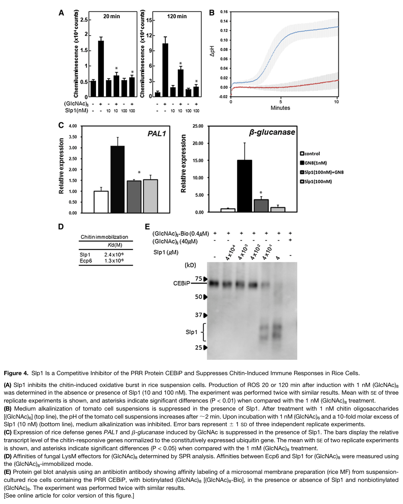

Slp1 (Secreted LysM Protein 1, MGG_10097) is a small (162 aa) secreted, N-glycosylated effector protein of the rice blast fungus Magnaporthe oryzae (Pyricularia oryzae) consisting of a signal peptide followed by two LysM carbohydrate-binding domains. Its expression is induced during plant infection, and the protein is secreted via the conventional ER-Golgi route into the extra-invasive hyphal membrane compartment, where it accumulates at the interface between the fungal cell wall and the rice plasma membrane; it is an apoplastic effector rather than one delivered into host cells. Slp1 forms homodimers and binds chitin and chitin oligosaccharides with high (nanomolar) affinity, but does not protect fungal hyphae from chitinases. By sequestering chitin oligosaccharides released from the fungal cell wall, Slp1 outcompetes the rice chitin-binding pattern recognition receptor OsCEBiP, preventing chitin perception and the downstream pattern-triggered immune responses (reactive oxygen burst and defense gene expression). Alg3-dependent N-glycosylation at three asparagine residues is required for Slp1 stability and chitin binding. Deletion of slp1 reduces fungal proliferation in rice tissue and lesion expansion, a defect that is abolished when CEBiP is silenced in the host.
| GO Term | Evidence | Action | Reason |
|---|---|---|---|
|
GO:0005576
extracellular region
|
EXP
PMID:22267486 Effector-mediated suppression of chitin-triggered immunity b... |
ACCEPT |
Summary: Slp1 is a signal-peptide-bearing secreted protein that accumulates at the interface between the fungal cell wall and the rice plasma membrane during infection (Mentlak et al. 2012), and is retained in the extra-invasive hyphal membrane (EIHM) compartment as an apoplastic effector (Qian et al. 2022).
Reason: Direct localization evidence (Slp1-GFP live-cell imaging) supports extracellular localization. The apoplastic site of action is the location where its chitin-sequestering function is exerted, so this is the core location. A more specific host-interface term could be considered, but extracellular region is accurate and appropriately conservative.
Supporting Evidence:
PMID:22267486
We demonstrate that Slp1 accumulates at the interface between the fungal cell wall and the rice plasma membrane
PMID:34761375
Apoplastic effectors are dispersed within the EIHM compartment and do not enter host cells
|
|
GO:0005576
extracellular region
|
IEA
GO_REF:0000044 |
ACCEPT |
Summary: Electronic mapping from the UniProt subcellular location "Secreted" (itself experimentally supported by PMID:22267486) to extracellular region.
Reason: Consistent with the experimental annotation and the experimentally determined apoplastic localization of Slp1; the mapping is correct.
Supporting Evidence:
PMID:22267486
by secreting an effector protein, Secreted LysM Protein1 (Slp1), during invasion of new rice cells
|
|
GO:0140403
effector-mediated suppression of host innate immune response
|
TAS
PMID:34761375 MoErv29 promotes apoplastic effector secretion contributing ... |
MODIFY |
Summary: Slp1 suppresses rice chitin-triggered immunity by sequestering chitin oligosaccharides and outcompeting the pattern recognition receptor CEBiP, thereby blocking chitin-induced ROS generation and defense gene expression (Mentlak et al. 2012; Chen et al. 2014). The cited PHI-base TAS source (Qian et al. 2022) is a study of the COPII cargo receptor MoErv29, which shows that Slp1 secretion depends on MoErv29, but does not itself test Slp1's immunosuppressive activity.
Reason: The process is correct and symbiont-side (appropriate for an effector), but it is more general than the experimental evidence warrants. Slp1 acts specifically upstream of PTI, by preventing CEBiP-mediated perception of the chitin MAMP and hence the chitin-triggered signaling that leads to ROS and defense gene induction. GO:0140423 effector-mediated suppression of host pattern-triggered immunity signaling (is_a GO:0052034 effector-mediated suppression of host pattern-triggered immunity, is_a GO:0140403) captures this precisely, and is the term used experimentally for the orthologous-in-role Cladosporium fulvum LysM effector Ecp6. The evidence for the specific term comes from Mentlak et al. 2012, not from the MoErv29 paper cited for the TAS row.
Proposed replacements:
effector-mediated suppression of host pattern-triggered immunity signaling
Supporting Evidence:
PMID:22267486
is able to suppress chitin-induced plant immune responses, including generation of reactive oxygen species and plant defense gene expression
PMID:22267486
We propose that Slp1 sequesters chitin oligosaccharides to prevent PAMP-triggered immunity in rice
PMID:24642938
Slp1 sequesters chitin oligosaccharides to avoid their recognition by the rice (Oryza sativa) chitin elicitor binding protein CEBiP and the induction of innate immune responses
PMID:34761375
These results indicated that MoErv29 was required for the efficient secretion of MoSlp1.
|
|
GO:0008061
chitin binding
|
IDA
PMID:22267486 Effector-mediated suppression of chitin-triggered immunity b... |
NEW |
Summary: Purified Slp1 binds chitin and chitin oligosaccharides (high-affinity binding to (GlcNAc)8 measured by SPR) and competes with CEBiP for chitin oligosaccharide binding; N-glycosylation is required for this chitin-binding activity.
Reason: Chitin binding is the molecular activity through which Slp1 executes its effector function and is directly demonstrated on the purified protein, but it is absent from GOA. It passes the participation test (the binding is the step itself - ligand sequestration) and the comparator check: the Cladosporium fulvum LysM effector Ecp6 carries GO:0008061 chitin binding by IDA, as does the competing receptor OsCEBiP. This is the activity term, not a perception/signaling term, so it does not leak receptor semantics onto the effector.
Supporting Evidence:
PMID:22267486
can bind to chitin
PMID:22267486
Slp1 competes with CEBiP for binding of chitin oligosaccharides
PMID:24642938
required to maintain protein stability and the chitin binding activity of Slp1
file:PYRO7/slp1/slp1-deep-research-falcon.md
No catalytic reaction or transported substrate has been demonstrated for Slp1.
|
Q: GO:0140423 (suppression of host PTI signaling) vs its parent GO:0052034 (suppression of host PTI) - Slp1 acts by ligand sequestration upstream of receptor activation rather than on a signaling component. Is "signaling" the right level for MAMP-scavenging effectors such as Slp1 and Ecp6, or should GO provide a dedicated child such as "effector-mediated suppression of host MAMP recognition"?
Q: Slp1 does not protect hyphae from chitinases (unlike Avr4). Does Slp1 also bind deacetylated or shorter chitin fragments, and does its homodimer bind chitin via intrachain or interchain LysM pairing as described for Ecp6?
Experiment: Crystal structure of Slp1 bound to (GlcNAc)n oligomers, to determine whether chitin is bound by an intramolecular LysM groove (Ecp6-like) or across the homodimer, and to design binding-dead mutants.
Experiment: Complement the slp1 deletion with structure-guided chitin-binding-dead LysM mutants and test virulence and host ROS on wild-type versus CEBiP-silenced rice, separating chitin binding from protein stability effects of glycosylation-site mutants.
The research report should be a detailed narrative explaining the function, biological processes, and localization of the gene product. Citations should be given for all claims.
You should prioritize authoritative reviews and primary scientific literature when conducting research. You can supplement
this with annotations you find in gene/protein databases, but these can be outdated or inaccurate.
We are specifically interested in the primary function of the gene - for enzymes, what reaction is catalyzed, and what is the substrate specificity? For transporters, what is the substrate? For structural proteins or adapters, what is the broader structural role? For signaling molecules, what is the role in the pathway.
We are interested in where in or outside the cell the gene product carries out its function.
We are also interested in the signaling or biochemical pathways in which the gene functions. We are less interested in broad pleiotropic effects, except where these elucidate the precise role.
Include evidence where possible. We are interested in both experimental evidence as well as inference from structure, evolution, or bioinformatic analysis. Precise studies should be prioritized over high-throughput, where available.
Identity check. The supplied UniProt record identifies G4N906 as slp1 / MGG_10097 from Pyricularia oryzae strain 70-15, also called Magnaporthe oryzae, the rice blast fungus. The primary literature independently describes an M. oryzae protein named Secreted LysM Protein 1 (Slp1) with two putative LysM carbohydrate-binding domains, consistent with that identification. Importantly, the authors distinguish it from a different fungal LysM protein, Slp2 (MGG_03468). The retrieved primary text does not print the G4N906–MGG_10097 accession mapping, so that exact mapping rests on the UniProt identity supplied in the question. The foundational experiments used fungal strains Guy11 and P131, not a demonstrated genetic test specifically in reference strain 70-15; they support functional annotation of this named protein without establishing that every measured phenotype is identical across strains. UniProt record; Mentlak et al., January 2012; Chen et al., March 2014. (mentlak2012effectormediatedsuppressionof pages 2-3, mentlak2012effectormediatedsuppressionof pages 4-6, chen2014nglycosylationof pages 8-9)
Primary molecular function: Slp1 is a secreted, chitin-binding immune-evasion effector, not a characterized enzyme or transporter. It captures fungal chitin-derived oligosaccharides outside the host cell, preventing their recognition by the rice cell-surface receptor CEBiP. Its documented role is thus ligand sequestration upstream of chitin-triggered pattern-triggered immunity (PTI), enabling fungal invasive growth. The two LysM domains support a carbohydrate-binding mechanism, but the strongest assignment comes from binding, receptor-competition, host-response, and genetic experiments—not domain annotation alone. Mentlak et al., 2012; Zhang et al., February 2024. (mentlak2012effectormediatedsuppressionof pages 1-2, mentlak2012effectormediatedsuppressionof pages 8-9, zhang2024earlymolecularevents pages 5-7)
Purified Slp1 coprecipitated with crab-shell chitin and chitin beads, but not the tested alternatives chitosan, cellulose, or xylan. Surface plasmon resonance measured a dissociation constant, Kᴅ = 2.4 × 10⁻⁹ M, for the chitin octamer (GlcNAc)₈. That result establishes high-affinity binding to an immunogenic N-acetylglucosamine oligomer; it does not establish an exhaustive preference among all oligomer lengths. The original paper reported a previously determined CEBiP–chitin-oligomer Kᴅ of 2.9 × 10⁻⁸ M, providing context for competition, although these are measurements reported from different experimental studies. Mentlak et al., 2012. (mentlak2012effectormediatedsuppressionof pages 8-9, mentlak2012effectormediatedsuppressionof pages 6-8, mentlak2012effectormediatedsuppressionof pages 4-6, mentlak2012effectormediatedsuppressionof media 0723f9e2)
Slp1 does not appear to function primarily as a fungal-cell-wall shield against chitinases: unlike the comparator Avr4, purified Slp1 did not protect Trichoderma viride hyphae from the tested chitinase preparation, even at the highest Slp1 concentration examined. This negative result applies to that assay; it does not exclude every possible cell-wall interaction in infected rice. No catalytic reaction or transported substrate has been demonstrated for Slp1. Mentlak et al., 2012. (mentlak2012effectormediatedsuppressionof pages 6-8, mentlak2012effectormediatedsuppressionof pages 4-6)
Slp1 is a 162-amino-acid precursor with a predicted 27-amino-acid N-terminal secretion signal. In live-cell imaging of infected rice, Slp1–GFP accumulated at the plant–fungus interface around invasive hyphae at approximately 24–28 hours after inoculation, and subsequently at hyphal tips entering neighboring cells. It was not observed accumulating in host-cell cytoplasm or the biotrophic interfacial complex used by host-cell-delivered effectors. Removing its signal peptide caused cytoplasmic accumulation and prevented complementation of the slp1 deletion phenotype. Its relevant functional compartment is therefore the narrow extracellular/apoplastic space between the invasive fungal wall and the rice-derived extra-invasive hyphal membrane, despite the hypha itself residing within a rice cell. Imaging does not fully resolve whether all detected protein remains freely soluble or some associates with the fungal surface. Mentlak et al., 2012. (mentlak2012effectormediatedsuppressionof pages 3-4, mentlak2012effectormediatedsuppressionof pages 2-3, mentlak2012effectormediatedsuppressionof pages 8-9, mentlak2012effectormediatedsuppressionof pages 4-6)
Recent reviews continue to classify Slp1 as an apoplastic effector, in contrast to cytoplasmic effectors delivered through the biotrophic interfacial complex. They describe conventional ER–Golgi trafficking as the general route for apoplastic effectors; Slp1’s signal-peptide dependence, extracellular location, and glycosylation are consistent with that classification, rather than constituting a complete Slp1-specific trafficking map. Wei et al., November 2023; Dulal and Wilson, September 2024. (dulal2024pathsofleast pages 2-3, wei2023recentadvancesin pages 17-19, dulal2024pathsofleast pages 4-5)
Rice OsCEBiP recognizes chitin oligosaccharides at the host plasma membrane and acts with the transmembrane kinase OsCERK1. A 2024 synthesis describes a receptor assembly containing two of each protein and downstream phosphorylation of OsRLCK185, leading to defense signaling. Slp1 acts before receptor activation: it binds the extracellular ligand, rather than having been shown to enzymatically modify CEBiP, inhibit OsCERK1 directly, or enter rice cells to block the downstream kinase. Zhang et al., 2024; Mentlak et al., 2012. (mentlak2012effectormediatedsuppressionof pages 2-3, zhang2024earlymolecularevents pages 5-7)
In a rice membrane assay, 0.4 µM Slp1 diverted labeled (GlcNAc)₈ from CEBiP; at 4 µM Slp1, CEBiP labeling was almost completely blocked. In rice suspension cells, 10 nM Slp1 suppressed the reactive-oxygen-species burst elicited by 1 nM (GlcNAc)₈, with stronger suppression at 100 nM. Slp1 also reduced induction of the chitin-responsive rice genes PAL1 and β-glucanase. These findings connect a defined biochemical interaction to specific host immune outputs. The original study’s Figure 4 presents the oxidative-burst, binding-affinity, and receptor-competition assays together. Mentlak et al., 2012. (mentlak2012effectormediatedsuppressionof pages 8-9, mentlak2012effectormediatedsuppressionof pages 6-8, mentlak2012effectormediatedsuppressionof media 0723f9e2)
The genetic evidence is unusually informative. In susceptible rice inoculated with Guy11, deleting SLP1 reduced mean lesion area from 1.15 to 0.31 mm² and mean lesion density from 40.7 to 11.1 per measured unit area; reintroducing SLP1 restored virulence. The mutant still produced morphologically normal conidia and appressoria, focusing the defect on successful invasion rather than failure to form the entry structure. In nonsilenced rice, wild-type Guy11 occupied a mean 8.1 host cells, versus 3.7 for Δslp1, at 48 hours after inoculation (P < 0.01). In CEBiP-silenced rice, that difference disappeared: 9.4 versus 10.2 cells, respectively (P = 0.322). This host–pathogen genetic interaction strongly supports suppression of CEBiP-dependent chitin perception as Slp1’s principal tested virulence role; RNAi-mediated CEBiP reduction is not proof that no other Slp1 function could exist under different conditions. Mentlak et al., 2012. (mentlak2012effectormediatedsuppressionof pages 8-9, mentlak2012effectormediatedsuppressionof pages 4-6)
A follow-up primary study found that Alg3, a fungal α-1,3-mannosyltransferase involved in N-glycan synthesis, is required for Slp1’s fully active glycosylated form. Four asparagine sites were initially predicted, but mutagenesis and glycosidase-sensitive immunoblots implicated Asn-48, Asn-104, and Asn-131 as the three functionally relevant Alg3-dependent sites; Asn-94 was a useful negative-control mutation. Mutating any of the three relevant sites impaired virulence complementation and suppression of infection-associated host ROS. Underglycosylated Slp1 still reached the plant–fungus interface, but accumulated less well and bound chitin beads poorly. Thus, glycosylation chiefly supports Slp1 stability and chitin-binding competence, not merely its observable destination. Chen et al., 2014. (chen2014nglycosylationof pages 5-8, chen2014nglycosylationof pages 8-9, chen2014nglycosylationof pages 9-10)
Alg3 is not synonymous with Slp1. The same work identified another glycosylated effector, Bas4, and found cell-wall defects in Δalg3 that were not reproduced by Δslp1. A subsequent comparative secretome study found 51 proteins reduced or missing from the Δalg3 secretome under its screening conditions and experimentally confirmed altered glycosylation/localization for nine selected proteins. Accordingly, broad Δalg3 defects cannot all be attributed to loss of Slp1 activity. Chen et al., 2014; Liu et al., July 2022. (chen2014nglycosylationof pages 9-10, liu2022comparativesecretomeanalysis pages 5-8)
The 2023–2024 literature primarily consolidates, rather than replaces, the experimentally established Slp1 mechanism: a glycosylated extracellular LysM effector prevents chitin perception by the OsCEBiP–OsCERK1 defense system. Its experimentally demonstrated use is as a research model for fungal ligand sequestration, receptor-pathway epistasis, and glycosylation-dependent effector activity. A 2024 review proposes that identifying fungal effectors and their host targets can inform breeding of disease-resistant rice; however, the reviewed evidence does not establish a deployed Slp1-targeting rice cultivar, fungicide, or field-tested Slp1-specific intervention. The most defensible translational inference is that preserving or strengthening chitin recognition, or disrupting fungal effector activity, merits investigation—not that either strategy has already been validated in agriculture for Slp1. Wei et al., 2023; Zhang et al., 2024; Dulal and Wilson, 2024. (zhang2024earlymolecularevents pages 5-7, dulal2024pathsofleast pages 2-3, wei2023recentadvancesin pages 17-19)
The following table separates decisive observations from their functional interpretations. (mentlak2012effectormediatedsuppressionof pages 8-9, mentlak2012effectormediatedsuppressionof pages 4-6, chen2014nglycosylationof pages 8-9, chen2014nglycosylationof pages 9-10)
| Experimental question | Direct observation (precise numeric values and units where reliable) | Interpretation/limitation | Primary source and DOI |
|---|---|---|---|
| Where is Slp1 localized during infection? | Secreted, accumulating at the plant-fungus interface at 24–28 hours after inoculation (HAI). Deletion of the 27-amino-acid signal peptide prevents secretion, causing cytoplasmic aggregation. | Slp1 acts extracellularly in the apoplast to interact with host interfaces. Observations based on live-cell imaging of tagged fusions in strain Guy11, not the reference genome strain 70-15. | Mentlak 2012, doi:10.1105/tpc.111.092957 (mentlak2012effectormediatedsuppressionof pages 3-4, mentlak2012effectormediatedsuppressionof pages 2-3) |
| What is the carbohydrate binding specificity of Slp1? | Co-precipitates with insoluble crab-shell chitin and chitin beads, but not with chitosan, cellulose, or xylan. Failed to protect Trichoderma viride hyphae from basic chitinases at concentrations up to 100 µM. | High specificity for chitin over other cell-wall polysaccharides. Lacks enzymatic activity and does not function to physically shield hyphae from chitinase hydrolysis. | Mentlak 2012, doi:10.1105/tpc.111.092957 (mentlak2012effectormediatedsuppressionof pages 6-8, mentlak2012effectormediatedsuppressionof pages 4-6) |
| What is Slp1's binding affinity for chitin? | Surface plasmon resonance (SPR) yielded a Kd of 2.4 nM (2.4 x 10^-9 M) for chitin octamers (GlcNAc)8. | Exhibits a high-affinity interaction with chitin oligosaccharides, stronger than the previously reported binding affinity of the rice CEBiP receptor. | Mentlak 2012, doi:10.1105/tpc.111.092957 (mentlak2012effectormediatedsuppressionof pages 8-9, mentlak2012effectormediatedsuppressionof media 0723f9e2) |
| Does Slp1 physically compete with host receptors? | In membrane assays, 0.4 µM Slp1 diverted binding of labeled (GlcNAc)8 from CEBiP. A 10-fold molar excess (4 µM) of Slp1 almost entirely blocked CEBiP labeling. | Directly sequesters chitin oligosaccharides, acting as a competitive inhibitor of the rice pattern recognition receptor CEBiP. | Mentlak 2012, doi:10.1105/tpc.111.092957 (mentlak2012effectormediatedsuppressionof pages 8-9, mentlak2012effectormediatedsuppressionof media 0723f9e2) |
| Does Slp1 suppress host immune responses (ROS)? | 10 nM and 100 nM Slp1 successfully suppressed the oxidative burst (reactive oxygen species) induced by 1 nM (GlcNAc)8 in rice suspension cells. | Effectively suppresses chitin-triggered pattern-triggered immunity (PTI) outputs in a dose-dependent manner in vitro. | Mentlak 2012, doi:10.1105/tpc.111.092957 (mentlak2012effectormediatedsuppressionof pages 6-8, mentlak2012effectormediatedsuppressionof media 0723f9e2) |
| Does Slp1 deletion impact fungal virulence? | Mean leaf lesion area for wild-type Guy11 was 1.15 mm², whereas the Δslp1 mutant produced significantly smaller lesions averaging 0.31 mm². | Slp1 is a critical virulence determinant required for full tissue invasion and lesion expansion during rice blast disease. | Mentlak 2012, doi:10.1105/tpc.111.092957 (mentlak2012effectormediatedsuppressionof pages 4-6) |
| Is Slp1's virulence function entirely dependent on CEBiP? | In wild-type rice, Guy11 occupied 8.1 cells vs Δslp1 3.7 cells. In CEBiP-RNAi rice lines, Guy11 occupied 9.4 cells vs Δslp1 10.2 cells (no significant difference). | Strict epistasis observed; the $\Delta$slp1 virulence defect is entirely rescued when the host CEBiP immune pathway is knocked down. | Mentlak 2012, doi:10.1105/tpc.111.092957 (mentlak2012effectormediatedsuppressionof pages 8-9) |
| How does N-glycosylation regulate Slp1 function? | Mutation of three specific Asn sites (N48G, N104G, N131G) abolished the fully glycosylated Slp1 form, abrogating chitin binding and stability. The N94G mutation served as a negative control and retained wild-type function. | Alg3-mediated N-glycosylation at positions 48, 104, and 131 is strictly required for effector stability and chitin-binding activity. Experiments were conducted in strain P131, not 70-15. | Chen 2014, doi:10.1105/tpc.114.123588 (chen2014nglycosylationof pages 9-10, chen2014nglycosylationof pages 8-9) |
Table: A detailed summary of primary experimental evidence characterizing the molecular function, localization, binding kinetics, and post-translational modification of the M. oryzae Slp1 effector.
References
(mentlak2012effectormediatedsuppressionof pages 2-3): Thomas A. Mentlak, Anja Kombrink, Tomonori Shinya, Lauren S. Ryder, Ippei Otomo, Hiromasa Saitoh, Ryohei Terauchi, Yoko Nishizawa, Naoto Shibuya, Bart P.H.J. Thomma, and Nicholas J. Talbot. Effector-mediated suppression of chitin-triggered immunity by magnaporthe oryzae is necessary for rice blast disease. The Plant Cell, 24(1):322-335, Jan 2012. URL: https://doi.org/10.1105/tpc.111.092957, doi:10.1105/tpc.111.092957. This article has 674 citations.
(mentlak2012effectormediatedsuppressionof pages 4-6): Thomas A. Mentlak, Anja Kombrink, Tomonori Shinya, Lauren S. Ryder, Ippei Otomo, Hiromasa Saitoh, Ryohei Terauchi, Yoko Nishizawa, Naoto Shibuya, Bart P.H.J. Thomma, and Nicholas J. Talbot. Effector-mediated suppression of chitin-triggered immunity by magnaporthe oryzae is necessary for rice blast disease. The Plant Cell, 24(1):322-335, Jan 2012. URL: https://doi.org/10.1105/tpc.111.092957, doi:10.1105/tpc.111.092957. This article has 674 citations.
(chen2014nglycosylationof pages 8-9): Xiao-Lin Chen, Tao Shi, Jun Yang, Wei Shi, Xusheng Gao, Deng Chen, Xiaowen Xu, Jin-Rong Xu, Nicholas J. Talbot, and You-Liang Peng. n -glycosylation of effector proteins by an α-1,3-mannosyltransferase is required for the rice blast fungus to evade host innate immunity. The Plant Cell, 26(3):1360-1376, Mar 2014. URL: https://doi.org/10.1105/tpc.114.123588, doi:10.1105/tpc.114.123588. This article has 164 citations.
(mentlak2012effectormediatedsuppressionof pages 1-2): Thomas A. Mentlak, Anja Kombrink, Tomonori Shinya, Lauren S. Ryder, Ippei Otomo, Hiromasa Saitoh, Ryohei Terauchi, Yoko Nishizawa, Naoto Shibuya, Bart P.H.J. Thomma, and Nicholas J. Talbot. Effector-mediated suppression of chitin-triggered immunity by magnaporthe oryzae is necessary for rice blast disease. The Plant Cell, 24(1):322-335, Jan 2012. URL: https://doi.org/10.1105/tpc.111.092957, doi:10.1105/tpc.111.092957. This article has 674 citations.
(mentlak2012effectormediatedsuppressionof pages 8-9): Thomas A. Mentlak, Anja Kombrink, Tomonori Shinya, Lauren S. Ryder, Ippei Otomo, Hiromasa Saitoh, Ryohei Terauchi, Yoko Nishizawa, Naoto Shibuya, Bart P.H.J. Thomma, and Nicholas J. Talbot. Effector-mediated suppression of chitin-triggered immunity by magnaporthe oryzae is necessary for rice blast disease. The Plant Cell, 24(1):322-335, Jan 2012. URL: https://doi.org/10.1105/tpc.111.092957, doi:10.1105/tpc.111.092957. This article has 674 citations.
(zhang2024earlymolecularevents pages 5-7): Haifeng Zhang, Jun Yang, Muxing Liu, Xiao-zhou Xu, Leiyun Yang, Xinyu Liu, You-Liang Peng, and Zhengguang Zhang. Early molecular events in the interaction between magnaporthe oryzae and rice. Phytopathology Research, 6:1-17, Feb 2024. URL: https://doi.org/10.1186/s42483-024-00226-z, doi:10.1186/s42483-024-00226-z. This article has 43 citations and is from a peer-reviewed journal.
(mentlak2012effectormediatedsuppressionof pages 6-8): Thomas A. Mentlak, Anja Kombrink, Tomonori Shinya, Lauren S. Ryder, Ippei Otomo, Hiromasa Saitoh, Ryohei Terauchi, Yoko Nishizawa, Naoto Shibuya, Bart P.H.J. Thomma, and Nicholas J. Talbot. Effector-mediated suppression of chitin-triggered immunity by magnaporthe oryzae is necessary for rice blast disease. The Plant Cell, 24(1):322-335, Jan 2012. URL: https://doi.org/10.1105/tpc.111.092957, doi:10.1105/tpc.111.092957. This article has 674 citations.
(mentlak2012effectormediatedsuppressionof media 0723f9e2): Thomas A. Mentlak, Anja Kombrink, Tomonori Shinya, Lauren S. Ryder, Ippei Otomo, Hiromasa Saitoh, Ryohei Terauchi, Yoko Nishizawa, Naoto Shibuya, Bart P.H.J. Thomma, and Nicholas J. Talbot. Effector-mediated suppression of chitin-triggered immunity by magnaporthe oryzae is necessary for rice blast disease. The Plant Cell, 24(1):322-335, Jan 2012. URL: https://doi.org/10.1105/tpc.111.092957, doi:10.1105/tpc.111.092957. This article has 674 citations.
(mentlak2012effectormediatedsuppressionof pages 3-4): Thomas A. Mentlak, Anja Kombrink, Tomonori Shinya, Lauren S. Ryder, Ippei Otomo, Hiromasa Saitoh, Ryohei Terauchi, Yoko Nishizawa, Naoto Shibuya, Bart P.H.J. Thomma, and Nicholas J. Talbot. Effector-mediated suppression of chitin-triggered immunity by magnaporthe oryzae is necessary for rice blast disease. The Plant Cell, 24(1):322-335, Jan 2012. URL: https://doi.org/10.1105/tpc.111.092957, doi:10.1105/tpc.111.092957. This article has 674 citations.
(dulal2024pathsofleast pages 2-3): Nawaraj Dulal and Richard A. Wilson. Paths of least resistance: unconventional effector secretion by fungal and oomycete plant pathogens. Molecular Plant-Microbe Interactions®, 37:653-661, Sep 2024. URL: https://doi.org/10.1094/mpmi-12-23-0212-cr, doi:10.1094/mpmi-12-23-0212-cr. This article has 14 citations.
(wei2023recentadvancesin pages 17-19): Yun-Yun Wei, Shuang Liang, Xue-Ming Zhu, Xiao-Hong Liu, and Fu-Cheng Lin. Recent advances in effector research of magnaporthe oryzae. Biomolecules, 13:1650, Nov 2023. URL: https://doi.org/10.3390/biom13111650, doi:10.3390/biom13111650. This article has 26 citations.
(dulal2024pathsofleast pages 4-5): Nawaraj Dulal and Richard A. Wilson. Paths of least resistance: unconventional effector secretion by fungal and oomycete plant pathogens. Molecular Plant-Microbe Interactions®, 37:653-661, Sep 2024. URL: https://doi.org/10.1094/mpmi-12-23-0212-cr, doi:10.1094/mpmi-12-23-0212-cr. This article has 14 citations.
(chen2014nglycosylationof pages 5-8): Xiao-Lin Chen, Tao Shi, Jun Yang, Wei Shi, Xusheng Gao, Deng Chen, Xiaowen Xu, Jin-Rong Xu, Nicholas J. Talbot, and You-Liang Peng. n -glycosylation of effector proteins by an α-1,3-mannosyltransferase is required for the rice blast fungus to evade host innate immunity. The Plant Cell, 26(3):1360-1376, Mar 2014. URL: https://doi.org/10.1105/tpc.114.123588, doi:10.1105/tpc.114.123588. This article has 164 citations.
(chen2014nglycosylationof pages 9-10): Xiao-Lin Chen, Tao Shi, Jun Yang, Wei Shi, Xusheng Gao, Deng Chen, Xiaowen Xu, Jin-Rong Xu, Nicholas J. Talbot, and You-Liang Peng. n -glycosylation of effector proteins by an α-1,3-mannosyltransferase is required for the rice blast fungus to evade host innate immunity. The Plant Cell, 26(3):1360-1376, Mar 2014. URL: https://doi.org/10.1105/tpc.114.123588, doi:10.1105/tpc.114.123588. This article has 164 citations.
(liu2022comparativesecretomeanalysis pages 5-8): Ning Liu, Linlu Qi, Manna Huang, Deng Chen, Changfa Yin, Yiying Zhang, Xingbin Wang, Guixin Yuan, Rui-Jin Wang, Jun Yang, You-Liang Peng, and Xunli Lu. Comparative secretome analysis of magnaporthe oryzae identified proteins involved in virulence and cell wall integrity. Genomics, Proteomics & Bioinformatics, 20:728-746, Jul 2022. URL: https://doi.org/10.1016/j.gpb.2021.02.007, doi:10.1016/j.gpb.2021.02.007. This article has 20 citations and is from a peer-reviewed journal.

Sources: UniProt G4N906 (Swiss-Prot), slp1-deep-research-falcon.md, cached PMID:22267486 (abstract only),
PMID:24642938 (abstract only, newly cached; PMID verified by PubMed search), PMID:34761375 (full text).
id: G4N906
gene_symbol: slp1
product_type: PROTEIN
status: COMPLETE
taxon:
id: NCBITaxon:242507
label: Pyricularia oryzae 70-15
description: >-
Slp1 (Secreted LysM Protein 1, MGG_10097) is a small (162 aa) secreted, N-glycosylated effector protein of
the rice blast fungus Magnaporthe oryzae (Pyricularia oryzae) consisting of a signal peptide followed by two
LysM carbohydrate-binding domains. Its expression is induced during plant infection, and the protein is
secreted via the conventional ER-Golgi route into the extra-invasive hyphal membrane compartment, where it
accumulates at the interface between the fungal cell wall and the rice plasma membrane; it is an apoplastic
effector rather than one delivered into host cells. Slp1 forms homodimers and binds chitin and chitin
oligosaccharides with high (nanomolar) affinity, but does not protect fungal hyphae from chitinases. By
sequestering chitin oligosaccharides released from the fungal cell wall, Slp1 outcompetes the rice
chitin-binding pattern recognition receptor OsCEBiP, preventing chitin perception and the downstream
pattern-triggered immune responses (reactive oxygen burst and defense gene expression). Alg3-dependent
N-glycosylation at three asparagine residues is required for Slp1 stability and chitin binding. Deletion of
slp1 reduces fungal proliferation in rice tissue and lesion expansion, a defect that is abolished when CEBiP
is silenced in the host.
existing_annotations:
- term:
id: GO:0005576
label: extracellular region
evidence_type: EXP
original_reference_id: PMID:22267486
qualifier: located_in
review:
summary: >-
Slp1 is a signal-peptide-bearing secreted protein that accumulates at the interface between the
fungal cell wall and the rice plasma membrane during infection (Mentlak et al. 2012), and is
retained in the extra-invasive hyphal membrane (EIHM) compartment as an apoplastic effector
(Qian et al. 2022).
action: ACCEPT
reason: >-
Direct localization evidence (Slp1-GFP live-cell imaging) supports extracellular localization. The
apoplastic site of action is the location where its chitin-sequestering function is exerted, so this
is the core location. A more specific host-interface term could be considered, but extracellular
region is accurate and appropriately conservative.
supported_by:
- reference_id: PMID:22267486
supporting_text: We demonstrate that Slp1 accumulates at the interface between the fungal cell wall
and the rice plasma membrane
- reference_id: PMID:34761375
supporting_text: Apoplastic effectors are dispersed within the EIHM compartment and do not enter host
cells
- term:
id: GO:0005576
label: extracellular region
evidence_type: IEA
original_reference_id: GO_REF:0000044
qualifier: located_in
supporting_entities:
- UniProtKB-SubCell:SL-0243
review:
summary: >-
Electronic mapping from the UniProt subcellular location "Secreted" (itself experimentally supported
by PMID:22267486) to extracellular region.
action: ACCEPT
reason: >-
Consistent with the experimental annotation and the experimentally determined apoplastic localization
of Slp1; the mapping is correct.
supported_by:
- reference_id: PMID:22267486
supporting_text: by secreting an effector protein, Secreted LysM Protein1 (Slp1), during invasion of
new rice cells
- term:
id: GO:0140403
label: effector-mediated suppression of host innate immune response
evidence_type: TAS
original_reference_id: PMID:34761375
qualifier: involved_in
review:
summary: >-
Slp1 suppresses rice chitin-triggered immunity by sequestering chitin oligosaccharides and outcompeting
the pattern recognition receptor CEBiP, thereby blocking chitin-induced ROS generation and defense gene
expression (Mentlak et al. 2012; Chen et al. 2014). The cited PHI-base TAS source (Qian et al. 2022)
is a study of the COPII cargo receptor MoErv29, which shows that Slp1 secretion depends on MoErv29,
but does not itself test Slp1's immunosuppressive activity.
action: MODIFY
reason: >-
The process is correct and symbiont-side (appropriate for an effector), but it is more general than
the experimental evidence warrants. Slp1 acts specifically upstream of PTI, by preventing CEBiP-mediated
perception of the chitin MAMP and hence the chitin-triggered signaling that leads to ROS and defense
gene induction. GO:0140423 effector-mediated suppression of host pattern-triggered immunity signaling
(is_a GO:0052034 effector-mediated suppression of host pattern-triggered immunity, is_a GO:0140403)
captures this precisely, and is the term used experimentally for the orthologous-in-role Cladosporium
fulvum LysM effector Ecp6. The evidence for the specific term comes from Mentlak et al. 2012, not
from the MoErv29 paper cited for the TAS row.
proposed_replacement_terms:
- id: GO:0140423
label: effector-mediated suppression of host pattern-triggered immunity signaling
additional_reference_ids:
- PMID:22267486
- PMID:24642938
supported_by:
- reference_id: PMID:22267486
supporting_text: is able to suppress chitin-induced plant immune responses, including generation of
reactive oxygen species and plant defense gene expression
- reference_id: PMID:22267486
supporting_text: We propose that Slp1 sequesters chitin oligosaccharides to prevent PAMP-triggered
immunity in rice
- reference_id: PMID:24642938
supporting_text: Slp1 sequesters chitin oligosaccharides to avoid their recognition by the rice (Oryza
sativa) chitin elicitor binding protein CEBiP and the induction of innate immune responses
- reference_id: PMID:34761375
supporting_text: These results indicated that MoErv29 was required for the efficient secretion of
MoSlp1.
- term:
id: GO:0008061
label: chitin binding
evidence_type: IDA
original_reference_id: PMID:22267486
review:
summary: >-
Purified Slp1 binds chitin and chitin oligosaccharides (high-affinity binding to (GlcNAc)8 measured by
SPR) and competes with CEBiP for chitin oligosaccharide binding; N-glycosylation is required for this
chitin-binding activity.
action: NEW
reason: >-
Chitin binding is the molecular activity through which Slp1 executes its effector function and is
directly demonstrated on the purified protein, but it is absent from GOA. It passes the participation
test (the binding is the step itself - ligand sequestration) and the comparator check: the
Cladosporium fulvum LysM effector Ecp6 carries GO:0008061 chitin binding by IDA, as does the competing
receptor OsCEBiP. This is the activity term, not a perception/signaling term, so it does not leak
receptor semantics onto the effector.
supported_by:
- reference_id: PMID:22267486
supporting_text: can bind to chitin
- reference_id: PMID:22267486
supporting_text: Slp1 competes with CEBiP for binding of chitin oligosaccharides
- reference_id: PMID:24642938
supporting_text: required to maintain protein stability and the chitin binding activity of Slp1
- reference_id: file:PYRO7/slp1/slp1-deep-research-falcon.md
supporting_text: No catalytic reaction or transported substrate has been demonstrated for Slp1.
core_functions:
- description: >-
Secreted apoplastic LysM effector that binds chitin oligosaccharides released from the fungal cell wall
with high affinity, sequestering them so they are not perceived by the rice receptor OsCEBiP, thereby
suppressing chitin-triggered pattern-triggered immunity (ROS burst, defense gene expression) and
allowing invasive growth.
molecular_function:
id: GO:0008061
label: chitin binding
directly_involved_in:
- id: GO:0140423
label: effector-mediated suppression of host pattern-triggered immunity signaling
locations:
- id: GO:0005576
label: extracellular region
supported_by:
- reference_id: PMID:22267486
supporting_text: Slp1 competes with CEBiP for binding of chitin oligosaccharides
- reference_id: PMID:22267486
supporting_text: We propose that Slp1 sequesters chitin oligosaccharides to prevent PAMP-triggered
immunity in rice
- reference_id: PMID:24642938
supporting_text: which are essential for its effector function
proposed_new_terms: []
suggested_questions:
- question: GO:0140423 (suppression of host PTI signaling) vs its parent GO:0052034 (suppression of host PTI)
- Slp1 acts by ligand sequestration upstream of receptor activation rather than on a signaling component.
Is "signaling" the right level for MAMP-scavenging effectors such as Slp1 and Ecp6, or should GO provide
a dedicated child such as "effector-mediated suppression of host MAMP recognition"?
- question: Slp1 does not protect hyphae from chitinases (unlike Avr4). Does Slp1 also bind deacetylated or
shorter chitin fragments, and does its homodimer bind chitin via intrachain or interchain LysM pairing
as described for Ecp6?
suggested_experiments:
- description: Crystal structure of Slp1 bound to (GlcNAc)n oligomers, to determine whether chitin is bound
by an intramolecular LysM groove (Ecp6-like) or across the homodimer, and to design binding-dead mutants.
- description: Complement the slp1 deletion with structure-guided chitin-binding-dead LysM mutants and test
virulence and host ROS on wild-type versus CEBiP-silenced rice, separating chitin binding from protein
stability effects of glycosylation-site mutants.
references:
- id: GO_REF:0000044
title: Gene Ontology annotation based on UniProtKB/Swiss-Prot Subcellular Location
vocabulary mapping, accompanied by conservative changes to GO terms applied by
UniProt
findings: []
- id: PMID:22267486
title: Effector-mediated suppression of chitin-triggered immunity by magnaporthe
oryzae is necessary for rice blast disease.
findings: []
reference_review:
relevance: HIGH
correctness: VERIFIED
review_notes: Abstract-only cache (PMC3289562). Foundational study establishing secretion, chitin
binding, CEBiP competition, PTI suppression and virulence role of Slp1.
- id: PMID:34761375
title: MoErv29 promotes apoplastic effector secretion contributing to virulence
of the rice blast fungus Magnaporthe oryzae.
findings: []
reference_review:
relevance: MEDIUM
correctness: MISCITED
review_notes: Full text cached. Shows Slp1 secretion into the EIHM depends on the COPII cargo receptor
MoErv29 via an N-terminal tripeptide motif; supports localization but does not test Slp1-mediated
immune suppression, for which it was cited (PHI-base TAS).
- id: PMID:24642938
title: N-glycosylation of effector proteins by an α-1,3-mannosyltransferase is required
for the rice blast fungus to evade host innate immunity.
findings: []
reference_review:
relevance: HIGH
correctness: VERIFIED
review_notes: PMID verified via PubMed search; abstract-only cache. Alg3-dependent N-glycosylation is
required for Slp1 stability and chitin binding.
- id: file:PYRO7/slp1/slp1-deep-research-falcon.md
title: Deep research report on Magnaporthe oryzae Slp1 (Falcon)
findings: []